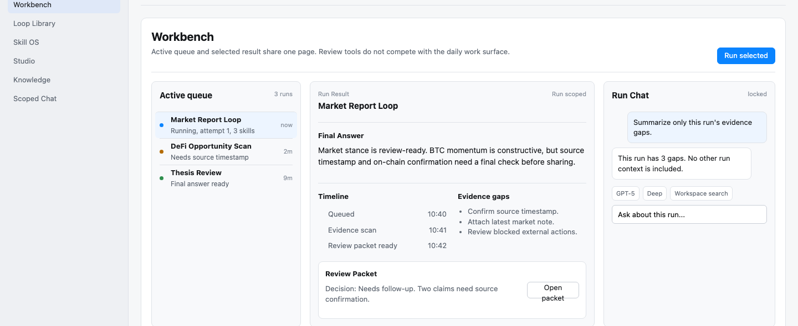
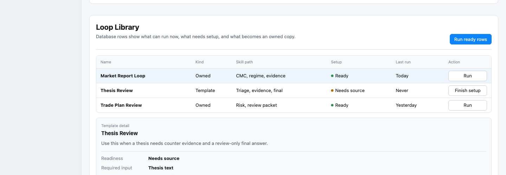
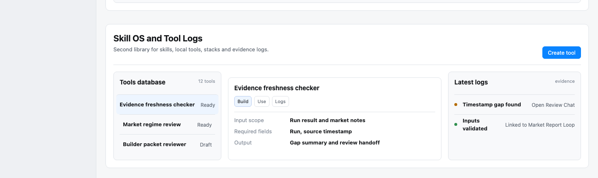
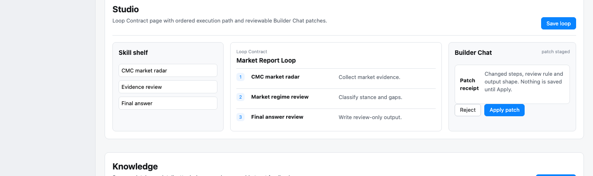
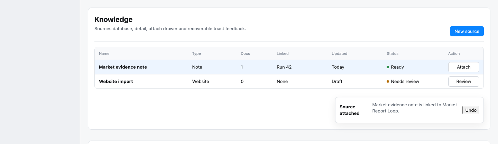
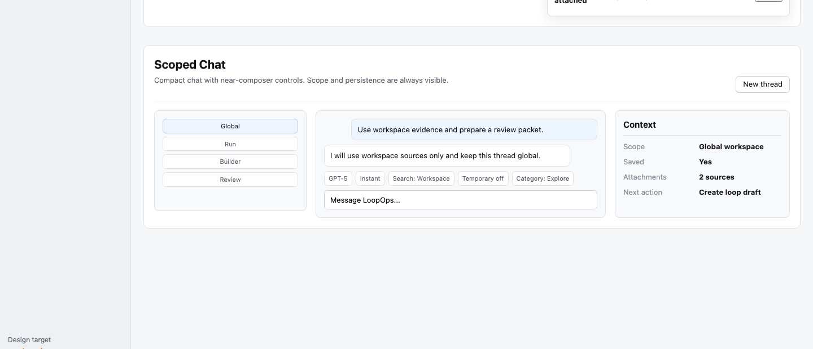
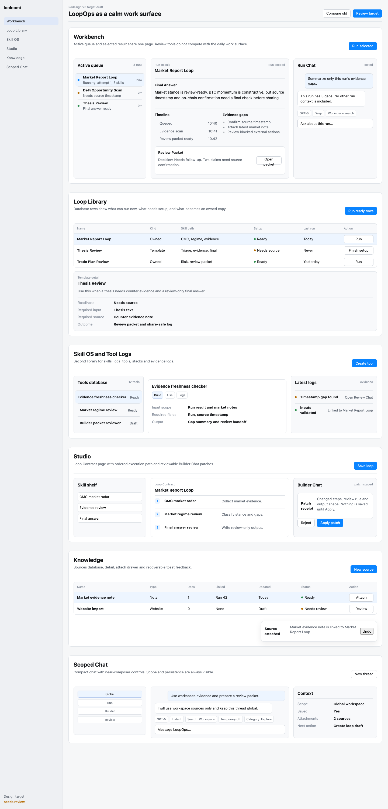
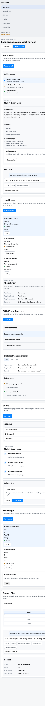

Workbench / Active Queue / Run Result
Queue, selected result, review packet and run-scoped chat share one coherent surface.


Use this board to inspect target screenshots and module intent. It is a reference page and does not block implementation.
Modules can be redesigned and implemented independently. Human feedback guides quality, but no status table blocks product iteration.
Old targets remain useful as references, but the UI can be rebuilt from scratch when a stronger interaction model emerges.
Each module includes a desktop target screenshot, source spec, and a direct target-page link.
Queue, selected result, review packet and run-scoped chat share one coherent surface.

Templates and owned loops behave like a database with readiness and clear run/setup actions.

Second library for skills, tool creation and readable evidence logs.

Loop Contract page, ordered path and patch receipt stay visible and separable.

Sources are database objects, attachment is scoped, and feedback is recoverable.

Scope, persistence, model, search and category controls live close to the composer.



Use this table as a module index. Notes guide redesign priorities; they do not authorize or block implementation.
| Module | Evidence | Use |
|---|---|---|
| Workbench / Active Queue / Run Result | Desktop target + mobile overview | reference |
| Loop Library / Marketplace | Desktop target + mobile overview | reference |
| Skill OS / Tool Builder / Tool Logs | Desktop target + mobile overview | reference |
| Studio / Builder Chat / Execution Path | Desktop target + mobile overview | reference |
| Knowledge / Toast / Attach | Desktop target + mobile overview | reference |
| Scoped Chat / Quick GUI | Desktop target + mobile overview | reference |
| Design Manager / QA | QA guidance | reference |
Implementation can proceed module by module. Use the handoff for component boundaries and verification guidance, not as a checkpoint.